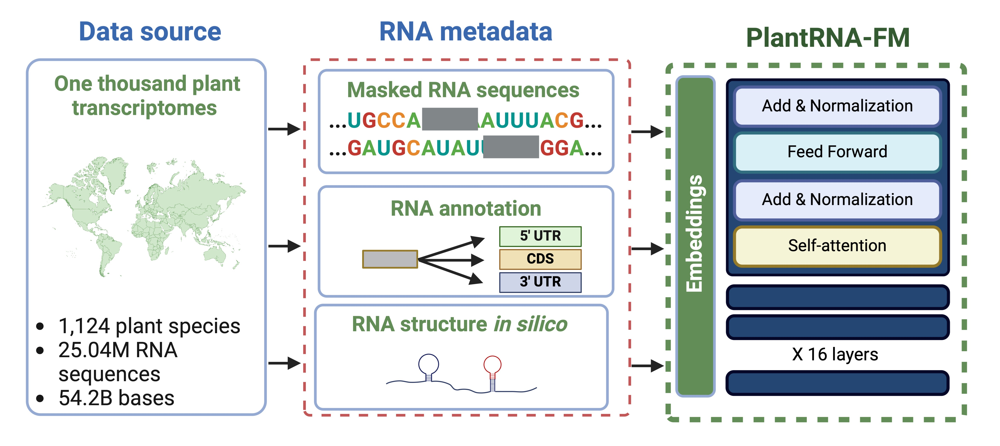
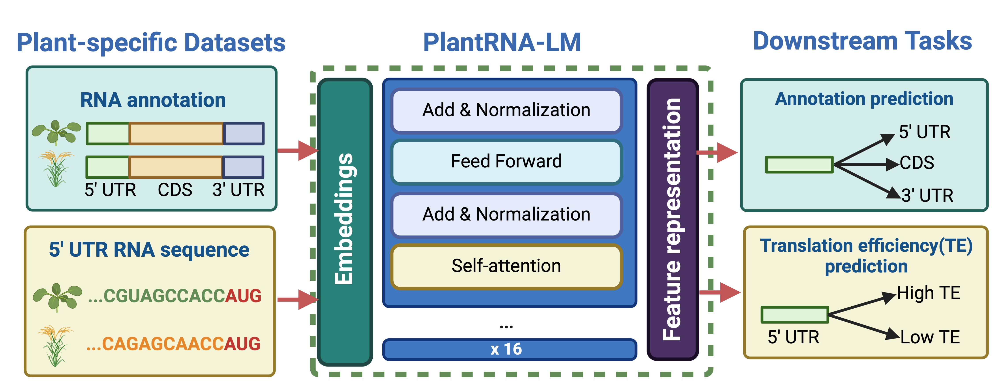
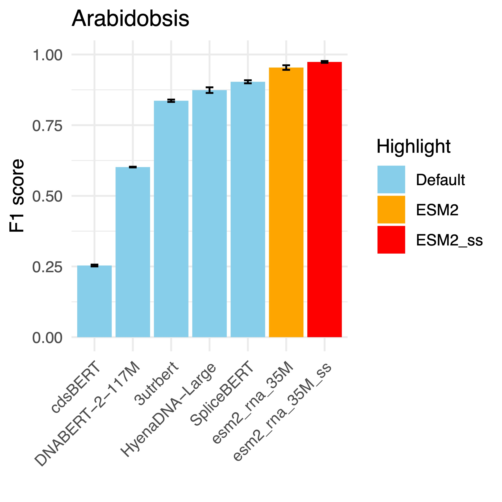
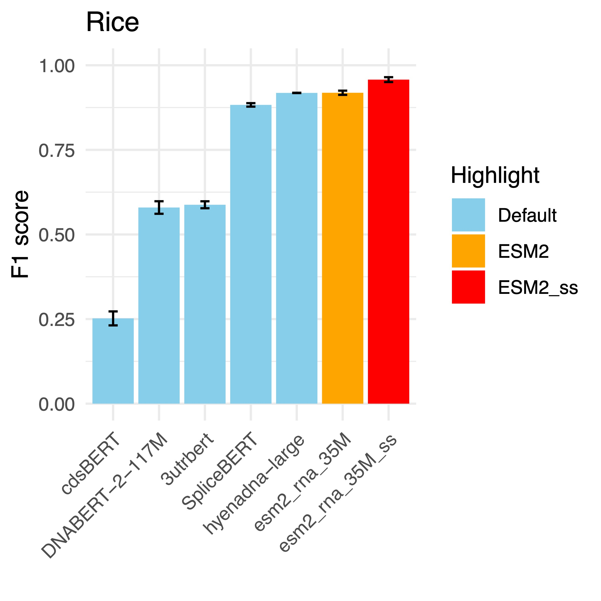
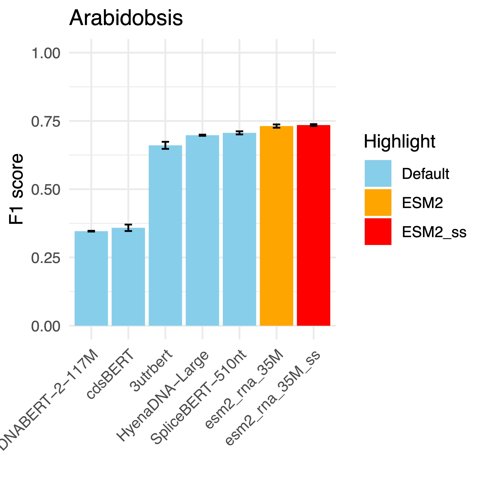
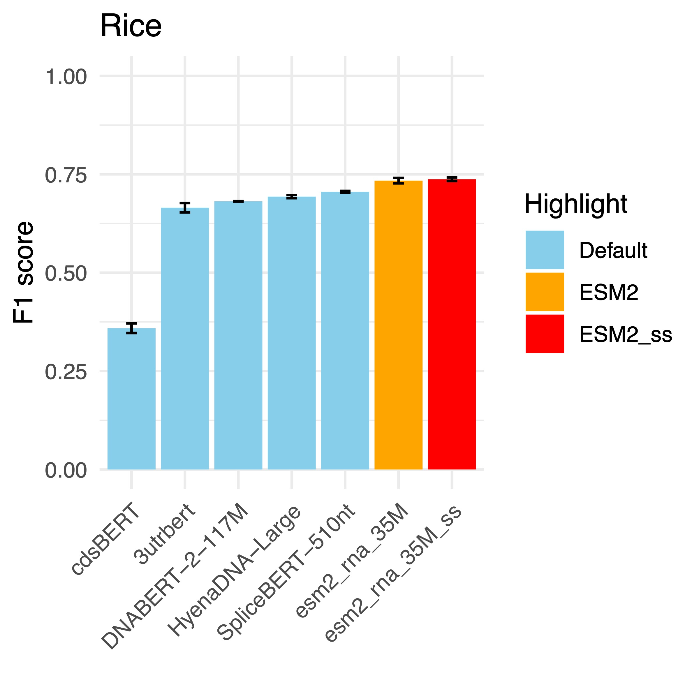
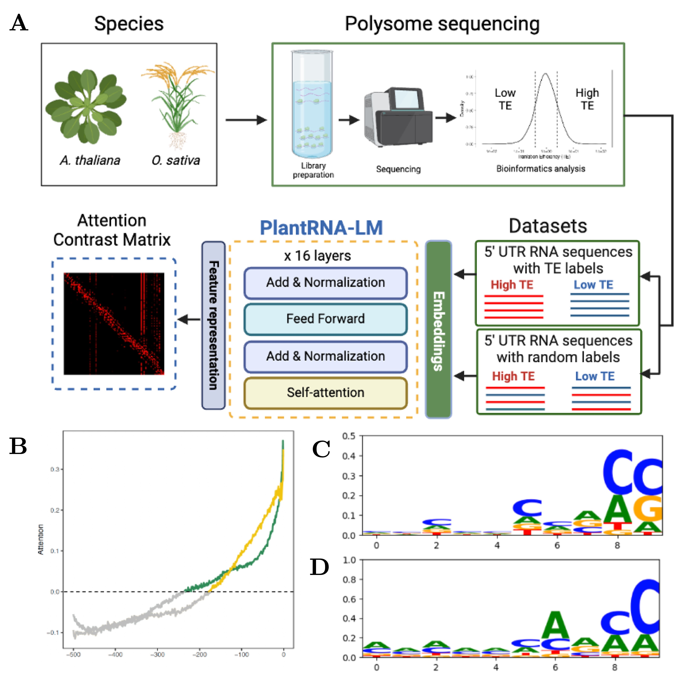
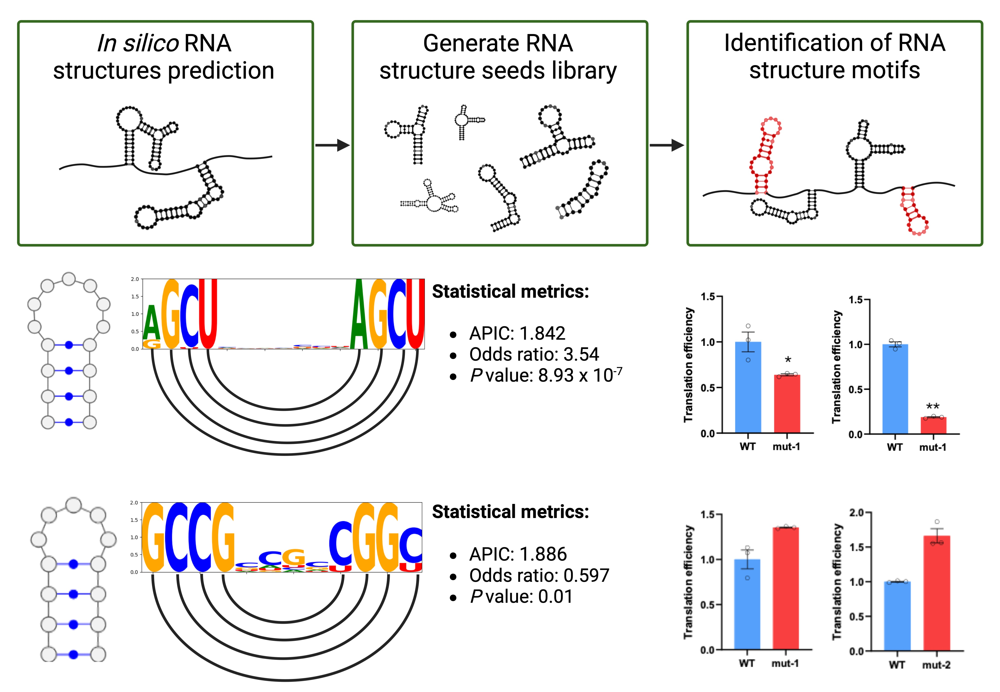

This website maintains the supplementary materials related to the following paper:
An Interpretable RNA Foundation Model for Exploration Functional RNA Motifs in Plants
Haopeng Yu, Heng Yang+, Wenqing Sun, Zongyun Yan, Xiaofei Yang, Huakun Zhang, Yiliang Ding, Ke Li 10.1038/s42256-024-00946-z biArXiv 2024.06.24.600509
Nature Machine Intelligence (NMI), 6: 1616–1625, 2024 Code | Supp | BiB

The complex 'language' of plant RNA encodes a vast array of biological regulatory elements that orchestrate crucial aspects of plant growth, development, and adaptation to environmental stresses. Recent advancements in foundation models (FMs) have demonstrated their unprecedented potential to decipher complex ‘language’ in biology. In this study, we introduced PlantRNA-FM, a novel high-performance and interpretable RNA FM specifically designed based on RNA features including both sequence and structure. PlantRNA-FM was pre-trained on an extensive dataset, integrating RNA sequences and RNA structure information from 1,124 distinct plant species. PlantRNA-FM exhibits superior performance in plant-specific downstream tasks, such as plant RNA annotation prediction and RNA translation efficiency (TE) prediction. Compared to the second-best FMs, PlantRNA-FM achieved an F1 score improvement of up to 52.45% in RNA genic region annotation prediction and up to 15.30% in translation efficiency prediction, respectively. Our PlantRNA-FM is empowered by our interpretable framework that facilitates the identification of biologically functional RNA sequence and structure motifs, including both RNA secondary and tertiary structure motifs across transcriptomes. Through experimental validations, we revealed novel translation-associated RNA motifs in plants. Our PlantRNA-FM also highlighted the importance of the position information of these functional RNA motifs in genic regions. Taken together, our PlantRNA-FM facilitates the exploration of functional RNA motifs across the complexity of transcriptomes, empowering plant scientists with novel capabilities for programming RNA codes in plants.
PlantRNA-FM demonstrates superior performance on plant-specific downstream tasks:

Annotation prediction


Translation efficiency prediction


PlantRNA-FM has the capability to be explainable.


We are keen on promoting reproducibility and transparency in scientific research. Since this manuscript is currently submitted for possible publication, the source codes used in our empirical study will be publicly available after its acceptance.